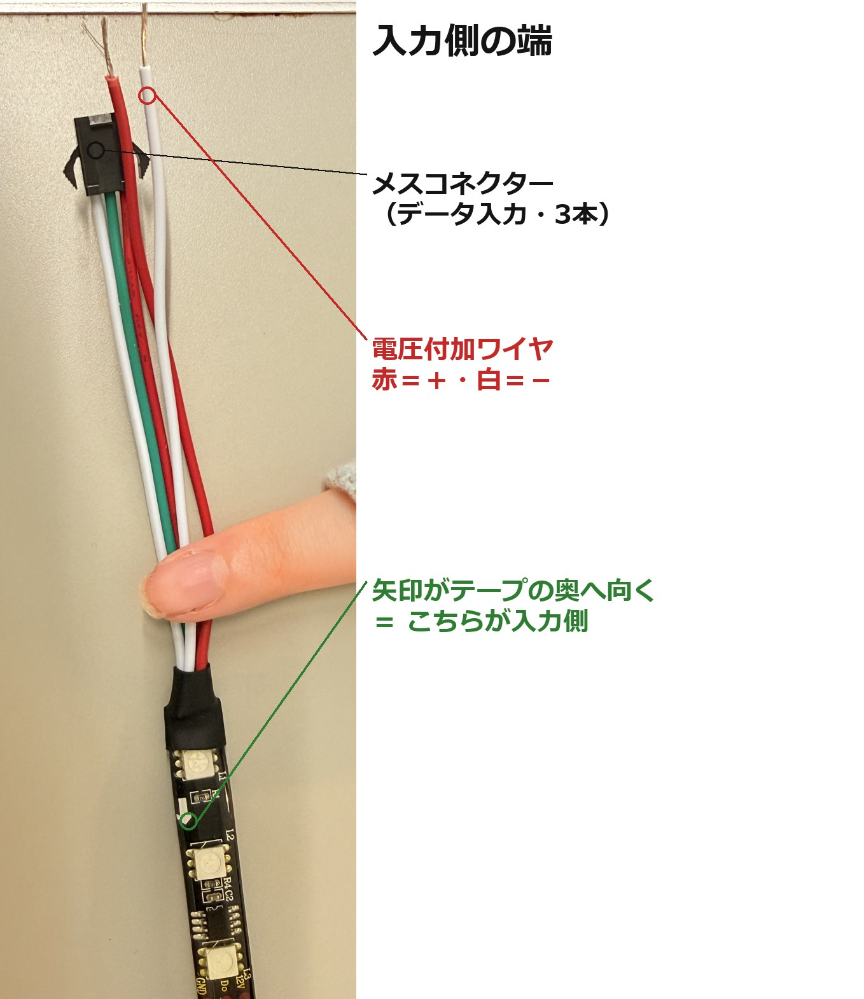
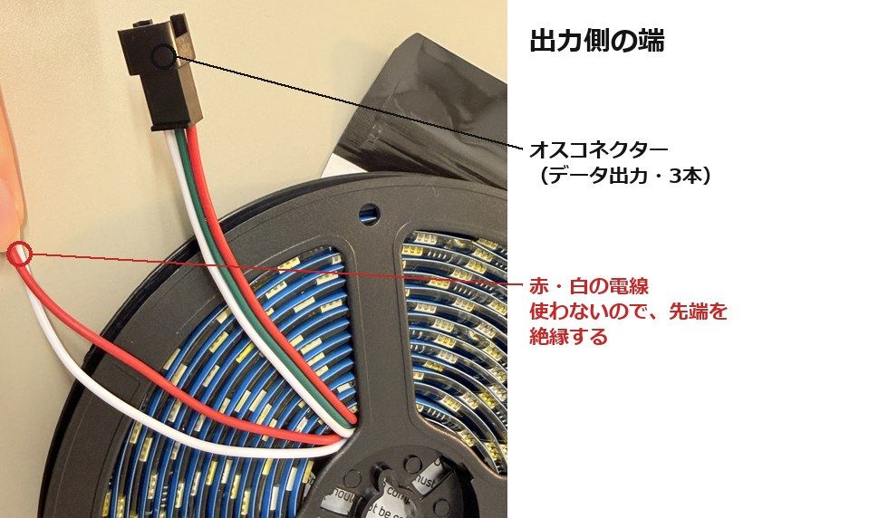

参考：メーカーの配電配線図（単一電源で複数巻を給電する例）。本構成はアダプターを巻ごとに分けるため、巻間の 12V は接続しない。
BTF-LIGHTING WS2811 DC12V（5m・60LEDs/m）× 5 ／ ENTTEC OCTO MK3 ／ 海渡電子 ACアダプター 12V 5A × 5 ／ TouchDesigner（Art-Net）
小学生向けの手順書（LEDテープ組立説明書）と同じ構成を、仕様・根拠・設定値中心にまとめたものです。
| 系統 | テープ | ピクセル | Art-Net Universe | 電源 |
|---|---|---|---|---|
| OCTO ポート1 | テープ1 → 2 → 3（デイジーチェーン） | 300 | 0, 1 | アダプター1（＋OCTO 本体）・2・3 |
| OCTO ポート2 | テープ4 → 5（デイジーチェーン） | 200 | 2, 3 | アダプター4・5 |
| 機器 | 仕様・備考 |
|---|---|
| LEDテープ | BTF-LIGHTING WS2811、DC12V、5m／巻、60LEDs/m（300 LED／巻）。WS2811 IC 1個で LED 3個を制御するため、アドレス単位は 100 ピクセル／巻（約5cm）。1線式（DATA のみ、CLK なし）。両端に 3ピン JST SM コネクター（入力：メス、出力：オス）＋電源用リード（赤＝12V、白＝GND）。 Amazon ASIN B082CVZVRY（IP65） |
| コントローラー | ENTTEC OCTO MK3（71522）。入力 DC 5〜60V／最大 5W。出力 2ポート（各 4ピン：V－・DATA・CLK/DATA・V＋）。対応入力：Art-Net（初期値）・sACN・ESP・KiNet。最大 1,360 RGB ピクセル／ポート。データ線長は出力から最初のピクセルまで 3m 以内。初期 LED Protocol は WS2812B。 |
| 電源 | 海渡電子 ACアダプター 12V 5A（60W）× 5。出力は DC プラグ。付属の DC ジャック プッシュ式端子（赤＝＋、黒＝－）で電線に変換。 |
| 配線材 | 電源：スピーカーケーブル 16AWG（約 1.3mm²）。データ：テープ付属 JST リード、予備の JST SM 3ピン（オス・メス）。接続：レバー式ワンタッチコネクター（3極 JAPPY、5極 WAGO）。 |
12V WS2811 テープは、IC 1個が LED 3個（直列）を1セグメントとして駆動します。一般的な定格（1セグメント・1色あたり約 20mA）で見積もると：
| 項目 | 値（目安） |
|---|---|
| 1セグメント 白・最大（R+G+B） | 約 60mA |
| 1m（20セグメント） | 約 1.2A ／ 約 14.4W |
| 5m（100セグメント） | 約 6A ／ 約 72W |
| アダプター容量 | 5A ／ 60W |
| 電線 | 始点 | 終点 |
|---|---|---|
| A1〜A5（＋） | DC ジャック端子 赤（＋） | 3極コネクター ← テープ入力側 赤リード |
| B1〜B5（－） | DC ジャック端子 黒（－） | 5極コネクター ← テープ入力側 白リード |
| C（＋） | テープ1 の 3極コネクター | OCTO POWER ＋（右） |
| D（－） | テープ1 の 5極コネクター | OCTO POWER －（左） |
16AWG スピーカーケーブル 10〜15cm × 12本。極性識別のため、印のある芯線を ＋（A・C）、無印を －（B・D）に割り当てる。被覆剥き 約1cm。

| 区間 | 接続 | 備考 |
|---|---|---|
| OCTO ポート1 → テープ1 | 付属オス JST：緑 → DATA、白 → V－ | 赤（12V）は未接続・絶縁。CLK・V＋ 未使用 |
| OCTO ポート2 → テープ4 | 同上 | 同上 |
| テープ1→2、2→3、4→5 | ジャンパー（メス JST ― オス JST）：緑・白のみ接続 | 赤は両側とも未接続・絶縁 |


データ方向はテープ上の矢印。入力側の基板パッドは 12V／Din／GND、出力側は 12V／Do／GND。
3極ワンタッチコネクター × 2（DATA 用・GND 用）で接続。必要に応じて長さを調整してよい（WS2811 の Dout は再生出力のため、テープ間は数 m 程度まで実用上問題なし）。
RESET／IDENTIFY ボタン：短押しで全出力を 10 秒間 255 にする Identify。ボタンを押したまま電源投入し、LED が黄色になるまで保持するとネットワーク設定が初期化される。
| 場所 | 項目 | ポート1 | ポート2 |
|---|---|---|---|
| Settings → Pixel Mapping Options | Input Protocol | Art-Net（初期値） | |
| Settings → Output Settings | LED Protocol | WS2811 | WS2811 |
| Settings → Output Settings | Mapped Pixels | 300 | 200 |
| Settings → Output Settings | Start Universe | 0 | 2 |
| Settings → Output Settings | Color Order | 実機で確認（RGB／GRB 等） | |
変更後は Save（保存しないと反映されない）。1ユニバース = 512ch のため RGB は最大 170 ピクセル／ユニバース。OCTO は開始ユニバースから連続して割り当てる（ポート1：0・1、ポート2：2・3）。Art-Net のユニバース番号は 0 始まり。
| Universe | サンプル範囲 | ピクセル | テープ |
|---|---|---|---|
| 0 | 0〜509 | 1〜170 | テープ1 全体、テープ2 の 1〜70 |
| 1 | 510〜899 | 171〜300 | テープ2 の 71〜100、テープ3 全体 |
| 2 | 900〜1409 | 301〜470 | テープ4 全体、テープ5 の 1〜70 |
| 3 | 1410〜1499 | 471〜500 | テープ5 の 71〜100 |
サンプル 3n・3n+1・3n+2 が n 番目（0 始まり）のピクセルの R・G・B。
| オペレーター | パラメーター | 値 |
|---|---|---|
| Pattern CHOP（例） | Length | 1500 |
| Math CHOP | Range | -1〜1 → 0〜255（DMX 値は 0〜255） |
| Trim CHOP × 4 | Start／End（Samples） | 8-1 の範囲 |
| DMX Out CHOP × 4 | Interface | Art-Net |
| Format | Packet Per Channel（1チャンネルのサンプル列を DMX ch として送出） | |
| Network Address | 192.168.0.10（ブロードキャスト 255.255.255.255 でも可） | |
| Net／Subnet | 0／0 | |
| Universe | 0／1／2／3（Universe = Net×256 + Subnet×16 + Universe） | |
| Rate／Port | ≤ 44（DMX の更新上限）／6454 |
実運用では、TOP の画像をピクセル列にサンプリング（TOP to CHOP など）して 1500 サンプルに整形し、全体輝度を Math CHOP で制限する（3-1 参照）。
| 症状 | 確認事項 |
|---|---|
| OCTO が起動しない | C／D の極性・締め付け、アダプター1 の DC ジャック端子 |
| 全テープ不点灯 | LED Protocol（WS2811）・Save、Input Protocol、Start Universe と TD の Universe の一致、PC の IP・ファイアウォール（UDP 6454） |
| ポート単位で不点灯 | 該当ポートの DATA／V－、付属 JST の挿入方向（入力側に接続しているか） |
| 途中から先が不点灯・ちらつき | 直前のジャンパーの DATA／GND、GND 共通化、該当テープの電源 |
| ピクセル単位でずれる | Mapped Pixels、Trim 範囲、170 ピクセル境界 |
| 色が違う | Color Order（RGB／GRB 等） |
| 末端が暗い・赤みがかる | 電圧降下。出力側リードからの追加給電、輝度制限 |
| アダプターの保護停止・発熱 | 白全点灯による過負荷（3-1）。輝度を下げる |
| 品名 | 数量 | 用途 |
|---|---|---|
| BTF-LIGHTING WS2811 LEDテープ DC12V 5m 60LEDs/m（IP65） | 5 | 本体 |
| 海渡電子 ACアダプター 12V 5A（DC ジャック プッシュ式端子付） | 5 | テープ給電（1 は OCTO も） |
| ENTTEC OCTO MK3 | 1 | Art-Net → WS2811 |
| BTF-LIGHTING JST SM 3ピン（オス・メス 10組） | 1 | ジャンパー 3本 |
| レバー式ワンタッチコネクター 3極（JAPPY） | 11個 | ＋側 5・ジャンパー 6 |
| レバー式ワンタッチコネクター 5極（WAGO） | 5個 | －側 |
| スピーカーケーブル 16AWG | 約 2m | 電源配線 12本 |
| 電源タップ（スイッチ付き）6個口 | 1 | アダプター一括投入 |
| LAN ケーブル | 1 | PC ↔ OCTO |
VFX照明制作 ／ LEDテープ 5本構成 技術者向けマニュアル 販売ページの画像（テープ端子・配電配線図）は BTF-LIGHTING より。OCTO の仕様は ENTTEC OCTO MK3 User Manual（2026年1月版）に基づく。